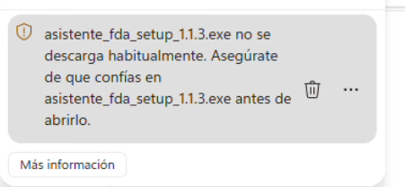
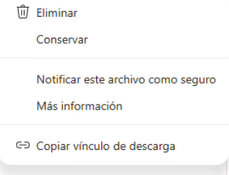
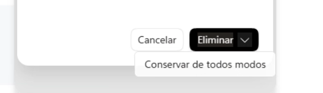
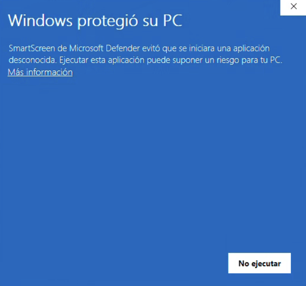
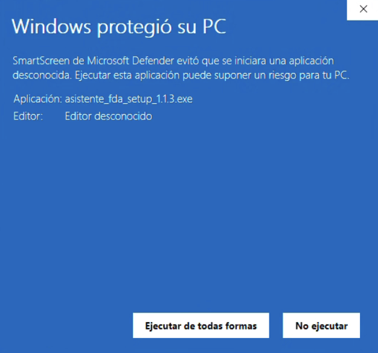

Asistente FDA · versión 1.1.3 · Windows
¿Tu navegador es Edge?
Edge avisa que el archivo no se descarga habitualmente. Hay que darle a los tres puntos y elegir Conservar. Vuelve a preguntar, y esa segunda vez la opción está metida dentro del botón Eliminar.
1Pon el mouse sobre el aviso de la descarga: aparecen una papelera y tres puntos.

12Clic en los tres puntos y elige Conservar.

23Vuelve a preguntar. No pulses Eliminar: abre la flecha que tiene pegada al lado.
4Elige Conservar de todos modos.

3 4Al abrir el archivo sale una pantalla azul con un solo botón visible: No ejecutar. Le das a Más información y aparece Ejecutar de todas formas.
1Pulsa el enlace Más información, debajo del texto. Es gris sobre azul y casi no se ve.

12Aparece Ejecutar de todas formas. Púlsalo y sigue la instalación hasta el final.

2Luego de la instalación, abre el programa: un administrador debe activar esta computadora.